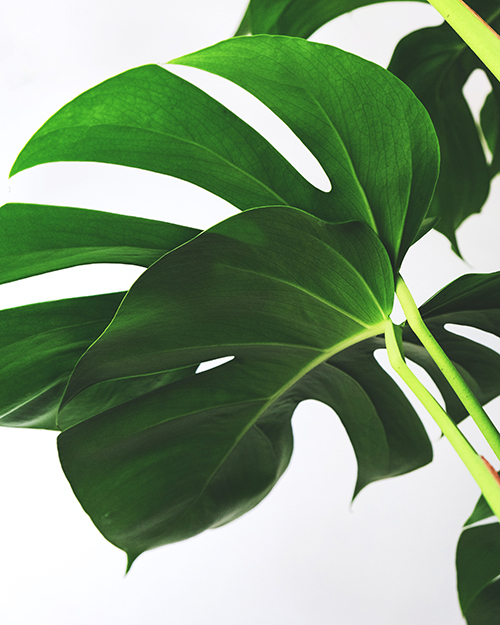

Why
Plants are important
Plants are really important for the planet and for all living things. Plants absorb carbon dioxide and release oxygen from their leaves, which humans and other animals need to breathe. Living things need plants to live - they eat them and live in them. Plants help to clean water too.
Indoor plants don’t just look good—they can make us feel good, too. Studies have shown indoor plants can... Boost moods, productivity, concentration, and creativity. Reduce stress and fatigue. Clean indoor air by absorbing toxins, increasing humidity, and producing oxygen. Add life to sterile spaces, offer privacy, and reduce noise levels. Be therapeutic to care for.